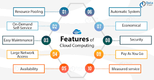

Cloud computing offers a myriad of features that have revolutionized the way organizations manage and deploy their IT resources. Security is a paramount concern in the cloud landscape. Cloud providers invest heavily in cutting-edge security measures, including encryption, identity and access management, and threat detection. These features ensure that data stored and processed in the cloud remains protected from unauthorized access and cyber threats. Scalability is another hallmark of cloud services. With the ability to scale resources up or down on-demand, businesses can effortlessly adapt to changing workloads. This scalability empowers organizations to handle traffic spikes, such as during seasonal sales or sudden surges in demand, without the need for significant infrastructure investments. Cloud's auto-scaling features automatically allocate resources as needed, optimizing performance and cost-efficiency.
Cost management is a key advantage of cloud computing. Cloud platforms offer various pricing models, including pay-as-you-go, which allows businesses to pay only for the resources they consume. This eliminates the need for upfront capital expenditures on hardware and infrastructure. Furthermore, cloud services provide tools for monitoring resource usage and optimizing costs, ensuring that organizations can effectively manage their budgets. Flexibility is another prominent feature of the cloud. Cloud environments support diverse workloads, applications, and operating systems, allowing businesses to choose the technology stack that best suits their needs. Additionally, cloud services facilitate remote work and collaboration, enabling employees to access data and applications from anywhere with an internet connection. This flexibility has become especially valuable in today's globalized and remote work-oriented business landscape, fostering innovation and productivity. In conclusion, the features of cloud computing, including security, scalability, cost management, and flexibility, have transformed the way businesses operate and thrive in the digital age.
Go to Level 3